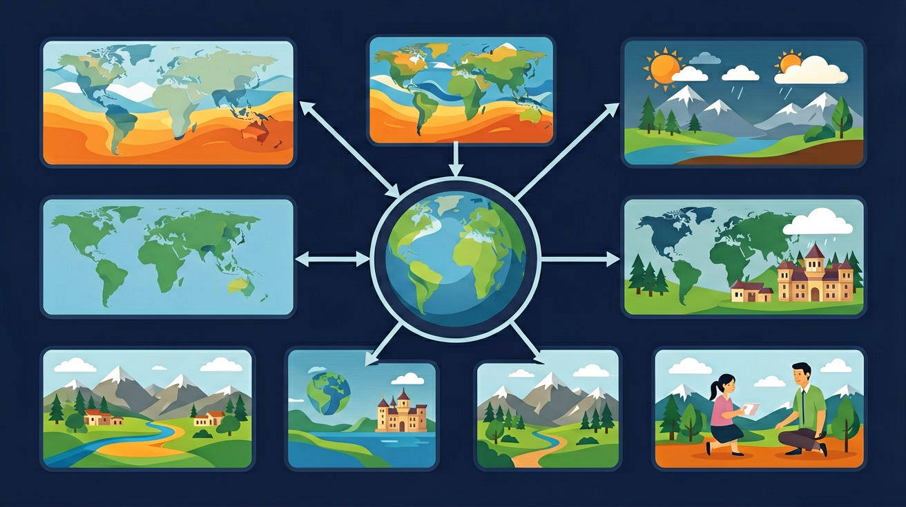

通过阅读地形图、图像，观看影视资料，观察地形模型或实地考察等，区别山地、丘陵、高原、平原、盆地的形态特征。
❓ 为什么我家住在平原却经常听说山区容易发生滑坡？
❓ 海底地形和陆地地形有什么不一样？
❓ 去青藏高原旅游为什么要带氧气瓶？
学完这一课，这些问题你都能自信地回答。
🎯 能说出世界五种基本地形类型的特征
🎯 能在地形图上判断高原、平原、山地等地形类型
🎯 能分析不同地形对人类活动的影响
下列哪种地形的海拔通常在200米以下？
青藏高原属于哪种地形类型？
世界地形类型是初中地理的重要内容。通过阅读地形图、图像，观看影视资料，观察地形模型或实地考察等，区别山地、丘陵、高原、平原、盆地的形态特征。
在世界地形图上指出陆地主要地形和海底主要地形的分布，观察地形分布大势。
陆地地形主要有山地、丘陵、平原、高原、盆地等。不同地形海拔、起伏状况不同，影响气候、河流与人类活动。读分层设色地形图可快速识别地形类型与地势起伏。
拖动缩放地图，点击城市标记查看气候或区域说明；可开河流图层对照。
第一个常见错误是将"高原"等同于"高山"，例如有学生认为青藏高原就是连绵不断的高山。实际上高原是指海拔500米以上、顶部起伏较小的大片平坦地，如黄土高原沟壑纵横但整体海拔1260-2000米；而高山强调相对高度差，如喜马拉雅山脉的珠穆朗玛峰海拔8848米但山脚仅约4000米。这种混淆源于对"绝对高度"和"相对高度"概念理解不深。
第二个错误是认为"盆地都是凹陷的"，比如把四川盆地简单想象成碗状。实际上盆地是四周高中间低的地形，但内部可能包含丘陵和平原，如塔里木盆地中部的塔克拉玛干沙漠海拔仍有800-1200米。这种误解来自对地形剖面图的机械记忆，忽略了比例尺和垂直夸张系数的存在。
第三个典型错误是混淆"大陆架"与"大陆坡"，常有学生将200米等深线作为二者分界。事实上大陆架是陆地向海洋的自然延伸，平均深度130米但可达500米（如鄂霍次克海大陆架）；大陆坡才是从大陆架外缘陡降至深海平原的过渡带，坡度可达4-7°。这种错误源于对海陆过渡带三维结构的认知不足。
复制提示词到 AI 学伴，生成「世界地形类型」的示意图或结构提纲；也可以上传你手绘的示意图，请 AI 学伴点评。
复制后可粘贴到 AI 学伴继续对话。
平原海拔较低较平坦；高原海拔高但顶面较平；山地起伏大。结合例证记世界大地形区。
常见误区：常见误区是把高原与山地都简单说成“高”，不区分起伏特征。
海拔较高、顶面较平坦的地形一般是？
在港珠澳大桥建设中，工程师必须考虑珠江口大陆架的地形特点。该区域水深5-10米的淤泥质海底地形，直接影响了沉管隧道的设计参数，最终33节沉管需要精确安装在45米深的基槽中，这要求对海底地形进行厘米级测绘。
云南哈尼梯田的耕作系统完美适应了山地地形。海拔1400-2000米的哀牢山南坡，每平方公里约有3000多块梯田，利用1500米的高差形成"森林-村寨-梯田-水系"垂直布局，年降水量1600mm的雨水通过地形高差实现自流灌溉。
风云四号气象卫星的地形识别系统能区分不同云层覆盖下的地形特征。2021年河南暴雨期间，卫星通过识别伏牛山与大别山之间的喇叭口地形，提前72小时预警了地形抬升导致的降水增幅，该地形的存在使实际降雨量比预报值增加40%。
问题1：为什么南美洲西海岸的安第斯山脉与东部的亚马逊平原之间没有过渡丘陵带？思考时可对比北美洲落基山脉与大平原之间的地形变化。提示：注意板块俯冲角度（南美板块纳斯卡板块30°俯冲 vs 北美板块胡安·德富卡板块10°俯冲）对山脉形态的影响，以及亚马逊河携带沉积物的填充作用。
问题2：黄土高原的沟壑地貌与云贵高原的喀斯特地貌都表现为地表破碎，但成因有何本质区别？可以从两个角度切入：一是比较黄土的垂直节理发育与石灰岩的溶蚀特性；二是分析两地年降水量差异（黄土高原400-600mm vs 云贵高原1000-1400mm）对侵蚀方式的影响。
当我们展开世界地形图，最先映入眼帘的是色彩分明的高低起伏。海拔基准面从海平面开始计算，太平洋马里亚纳海沟深达11034米，而珠穆朗玛峰海拔8848米，这近20公里的垂直跨度构成了地形的骨架。大陆上，占陆地面积33%的高原最具迷惑性——看似平坦的巴西高原其实被河流切割得支离破碎，平均海拔虽然只有500米，但局部陡崖落差可达800米。接着观察占陆地面积1/4的山地，安第斯山脉南北绵延8900公里，但真正的戏剧性在于秘鲁境内100公里水平距离内海拔从0米骤升到6768米。过渡到占陆地面积1/3的平原，西伯利亚平原东西跨度3000公里，海拔差却不足100米，这种极低的地形起伏使得冬季冷空气可以长驱直入。特殊地形中，刚果盆地展示着完美的碟形结构，其中心海拔仅300米，四周却被1500米的高地环抱，这种封闭地形使热带雨林气候格外稳定。最后来到海洋地形，大陆架像隐形台阶缓缓没入深海，澳大利亚西北大陆架宽达1000公里，而日本列岛附近的大陆架仅有50公里，这种差异直接影响了各国海洋权益的划分标准。
关于地形类型的本质特征，正确的是
对比云贵高原与长江中下游平原的聚落分布差异
先独立作答，再点选项查看对错与错因。
哀牢山区公路多急弯陡坡，这种地形的主要判断依据是
滇池周边适宜发展农业的主要地形原因是
下列对洱海平原描述正确的是
山地与丘陵的核心区别在于____和起伏程度
答案：海拔高度
山地需同时满足500米海拔和高差大
世界最大平原____由河流冲积形成
答案：亚马孙平原
考查著名地形案例记忆
（中考真题）某地区海拔500米以上，地表起伏和缓，这种地形最可能是？
（迁移题）为什么塔里木盆地适合种植棉花？
（概念检测）下列哪项最能体现地形对人类活动的影响？
✅ 高原的关键特征是海拔高但表面平坦，如青藏高原
💡 混淆了海拔高度和地表形态
✅ 盆地四周高中间低，如四川盆地；而平原地势低平且开阔
💡 忽视了对周围地形的观察
迁移任务：找一道与「世界地形类型」相关的练习题或生活情境，用本课方法完整解答一遍。
口诀：平低高平坦，山地起伏大，丘陵坡度缓，盆地四周高
类比：地形就像人的五官，有的平坦如额头（平原），有的高耸如鼻子（山地），有的凹陷如酒窝（盆地）
复述本课两个核心概念的定义。
用本课方法分析一个新例子。
有同学认为：认为高原就是高山 —— 请说明错在哪里。
有同学认为：把盆地当成平原 —— 请说明错在哪里。
把还没弄明白的地方写下来问 AI 学伴。它会先帮你找到卡住的地方，再给你一个小小的提示，让你自己往前走一步。